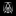
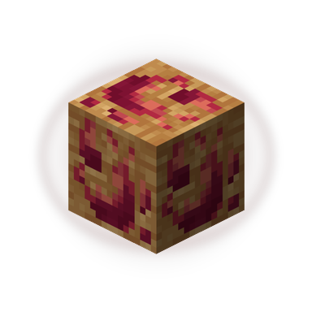

🔍 Karl X — Redundancy & "Extra Buttons" Audit Report
Detailed verification of elements, actions, and buttons across the extension that perform the same work, cause UI congestion, or duplicate existing functionality.
1. Library View: Double "Save" ActionsRESOLVED
Removed the duplicate [✦ Save Selected] button from the footer. Tabs are now saved cleanly using the inline (+) button on each tab row, and tab selection is dedicated to grouping and export!
Karl X
▤
Library
Group
Select All·Deselect All2 / 4 tabs
Not Saved(2)

GitHub - deepmind/antigravity
A
YouTube - Research Paper Explained
Point A: Inline (+) ButtonSaves this single tab to Karl X Library immediately via API POST /api/pages/save-bulk.
Point B: Bottom [✦ Save Selected] ButtonSaves the highlighted/checked tabs to Karl X Library via the exact same API. Users are presented with two competing ways to save the same open tabs.
💡 Solution: Keep single-click on tab row to toggle selection and let [✦ Save Selected] handle batches, or make the inline button the sole action and remove the cluttered bottom bar.
2. Dual Session Recovery BannersVISUAL OVERLAP
Two separate recovery banners appear at the top of the popup when starting up or after closing a window, offering almost identical reincarnation actions.
Karl X
▤
Library
Group
C
✨ Previous Session Ready (14 tabs)4m left ✕
D
🪟 Closed Window (8 tabs)1m ago ✕
(Open tabs are pushed down below viewport)
Point C: Startup Browser Session BannerOffers "✦ Reincarnate Session" and "All Sessions" (which opens Dashboard).
Point D: Closed Window Recovery BannerOffers "✦ Reincarnate" and "History" (which also opens Dashboard).
💡 Solution: Merge into a single smart "Quick Recovery" pill that only shows the most recent closed session with a single Reincarnate trigger.
3. Group View: Creation DuplicationCLEANED & ALIGNED
Previously, unsaved group cards had an orange circular (+) in the header AND a [💾 Save as Group] button right underneath.
Karl X
▤
Library
Group
Saved0
Unsaved2
Research Project (2)Unsaved
Header (+) Removed SuccessfullyThe duplicate circular button in the card header was removed. The card header now stays uncluttered, while [💾 Save as Group] remains the sole primary button.
Subnav Restored to 50/50 WidthRemoving the extra "+ New Group" button next to Saved/Unsaved gave the switcher 160px+ of breathing space.
4. Dashboard: Top Bar "+ New Group" vs InlinePOTENTIAL OVERLAP
On the Dashboard SavedGroups.tsx page, the top action bar has a + New Group modal button, while every unsaved group card also has Save as Group.
Tab Groups
Manage and restore your saved tab groups
E
Saved (0)Unsaved (2)
Work Tabs (3 tabs)Active in Chrome
F
Point E: Top Bar [+ New Group]Opens a modal to manually pick from open tabs and save them as a new group.
Point F: Card [💾 Save as Group]Saves existing Chrome groups directly into the saved collection.
💡 Clarification: Point E creates a new custom group from scratch, while Point F converts an existing Chrome group into a Saved Group. If the user only wants groups created in Chrome, Point E is an extra button.
Earth tabs with dedicated blue & red glowing halos, dark background matching #0a0a0c, inside-theme matching borders/glow/badges, and formfactor minimization swapping.
Active Bar (Background matched to #0a0a0c):
Earth-6167

Earth-1014
Alternate Active State (When Earth-101 is Selected):